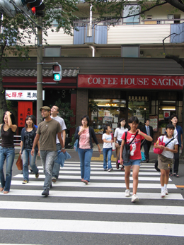

Walking
Most of us walk at some point each day but we do it far less than we used to – the government calculates there's been a decline of more than 20 per cent in the number of miles walked since the mid-1980s.
But walking's the simplest and cheapest of all exercises, and making it a regular activity and focusing on the intensity or distance covered can greatly increase your fitness.
Walking improves the condition of your heart and lungs (cardiovascular fitness) and works the muscles of the lower body. It's a weight-bearing activity, so it may improve bone density, yet it's also low impact, putting less stress on the joints than some other forms of exercise.
Aside from the health benefits of walking, some of the country's most beautiful scenery can only be accessed on foot, so if you don't try walking, think what you're denying yourself. If you're a novice, go in groups or as part of an organised outing via a ramblers club.
Walking up hills expends more energy - even walking down again uses more energy than walking on the flat, but if you don't think you're ready for the hills yet, boost your fitness by walking just about anywhere.
You could try power walking in the park, for example: the idea is to walk at such a fast pace that it would actually be easier to break into a run. You burn more calories walking at this speed than you would running at the same pace.
If you do little activity at the moment, the following tips can help kick-start your walking programme:
»Walk, don't drive, to the local shop. If you have a lot to carry, take a small rucksack.
»If you have children, walk them to and from school as briskly as you all can manage.
»Get off the bus or train a stop or two early. This will give you some extra daily exercise - and might even reduce your fare.
»Take a walk during your lunch hour. Half an hour's walk after a meal will cut the amount of fat you store by using it to fuel your exercise.
»Once a week take a longer walk along a completely different route to keep things interesting.

© Daniel Ingram, 2011 ~ Site Map
All content within is provided for general information only, and should not be treated as a substitute for the medical advice of your own doctor or any other health care professional. We are not responsible or liable for any diagnosis made by a user based on the content of this website. We are not liable for the contents of any external internet sites listed, nor does it endorse any commercial product or service mentioned or advised on any of the sites. See our Links Policy for more information. Always consult your own GP if you're in any way concerned about your health.